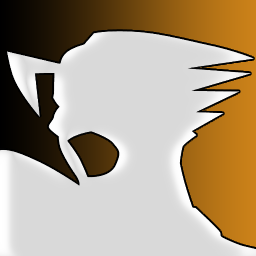

 Phoenix Wright - Ace Attorney - Justice For All
Details
| Playtime | Not Played |
| Last Activity | Never |
| Added | 07/03/2024 22:33:26 |
| Modified | 20/05/2024 22:32:56 |
| Completion Status | Not Played |
| Library | Playnite |
| Source | |
| Platform | Nintendo DS |
| Release Date | 18/10/2002 |
| Community Score | 79 |
| Critic Score | 76 |
| User Score | 0 |
| Genre | Adventure Visual novel |
| Developer | Capcom |
| Publisher | Capcom |
| Feature | Single Player |
| Links | |
| Tag | |
Description
The story follows Phoenix Wright, a defense attorney who defends his clients in four episodes. Among other characters are his partner Maya Fey, her cousin Pearl, and the rival prosecutor Franziska von Karma. The game is divided into two types of sections: courtroom sessions, where the player cross-examines witnesses and tries to uncover contradictions in their testimonies; and investigations, where the player gathers evidence and talks to witnesses.
The game was directed and written by Shu Takumi, as the second entry in a planned Ace Attorney trilogy. It was originally intended to feature the first game's prosecutor, Miles Edgeworth, in all episodes; Franziska was created when the development team learned that Edgeworth had become popular among players, and Takumi wanted to use the character more carefully and sparingly. They only introduced one new gameplay mechanic in the game; Takumi wanted to keep the game focused on the core concept of finding lies, and to keep it simple enough for his mother to play. The game was positively received by critics, who generally liked the writing, but criticized the lack of the Nintendo DS-exclusive gameplay mechanics that appeared in the previous game.
A high-definition version of the first three Ace Attorney games, Phoenix Wright: Ace Attorney Trilogy HD, was released for iOS and Android in Japan on February 7, 2012, and for iOS in the West on May 30, 2013. Another collection of the first three games, Phoenix Wright: Ace Attorney Trilogy, was released for the Nintendo 3DS in Japan on April 17, 2014, in North America on December 9, 2014, and in Europe on December 11, 2014. It was also released for Nintendo Switch, PlayStation 4, and Xbox One on February 21, 2019, in Japan, and on April 9, 2019, internationally; a Windows version was released internationally on the same date. The PC version of the collection was among the best-selling new releases of the month on Steam.